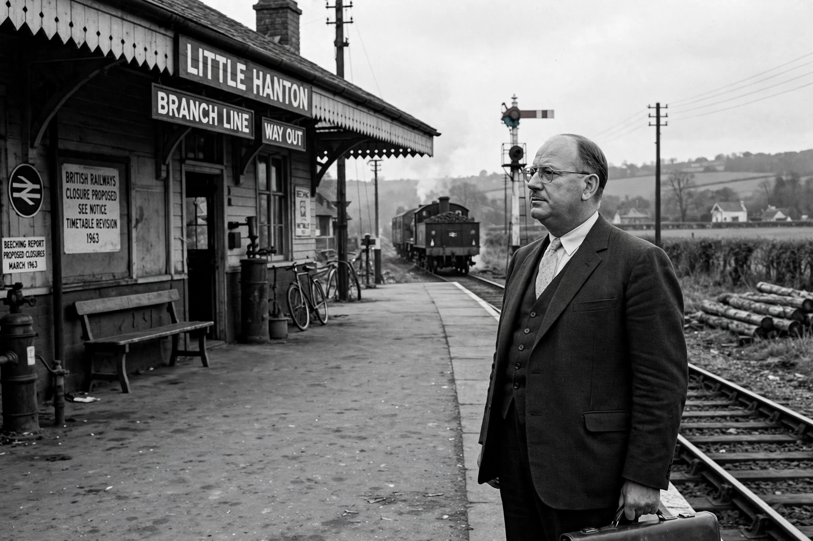

Richard Beeching, Baron Beeching (21 April 1913 – 23 March 1985) was a British engineer and public official. As chairman of the British Transport Commission and then of the British Railways Board in the 1960s, he produced the report The Reshaping of British Railways (1963), which recommended the closure of a third of Britain's railway network — the so-called Beeching cuts.

Beeching studied physics at Imperial College London, worked in armaments research during the Second World War, and became a director and later deputy chairman of Imperial Chemical Industries (ICI).
Appointed to lead the newly loss-making nationalised railways, Beeching concluded that many rural lines and stations were hopelessly uneconomic. His 1963 report proposed closing 2,363 stations and 5,000 miles of line; a second report in 1965 proposed concentrating investment on selected trunk routes. Most closures were implemented by the Labour government elected in 1964, despite earlier pledges to halt them.
The cuts reshaped British transport, shifting traffic to roads. From the late 20th century some closed lines reopened, and "reversing Beeching" became a recurring political pledge. Beeching was made a life peer in 1965.